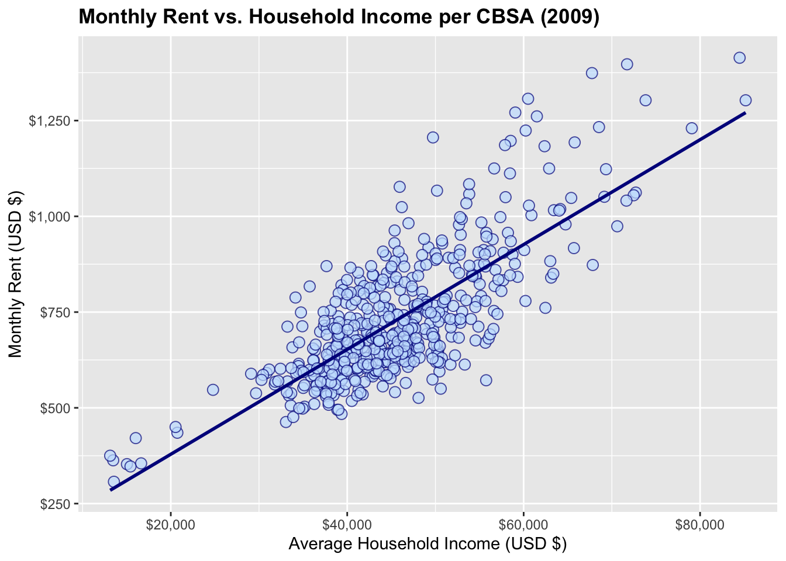
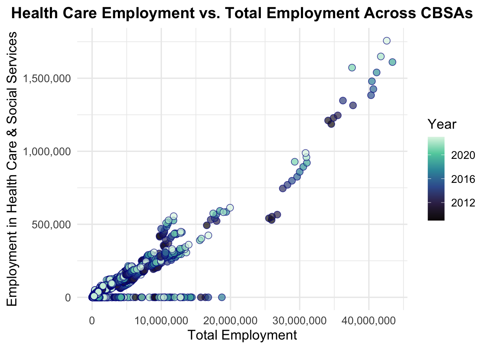
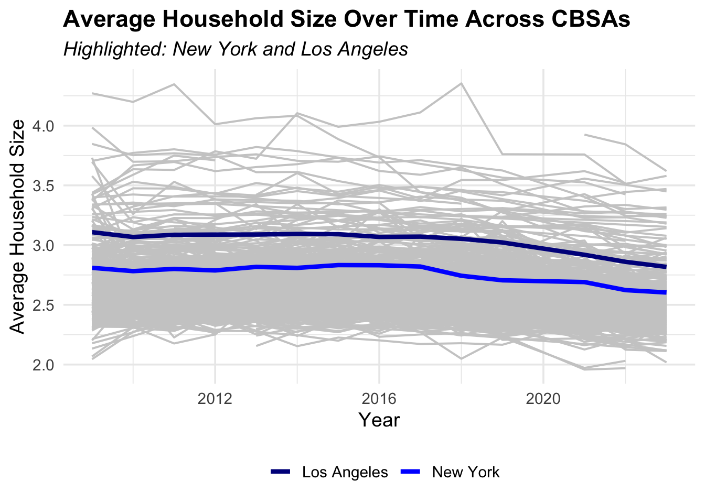
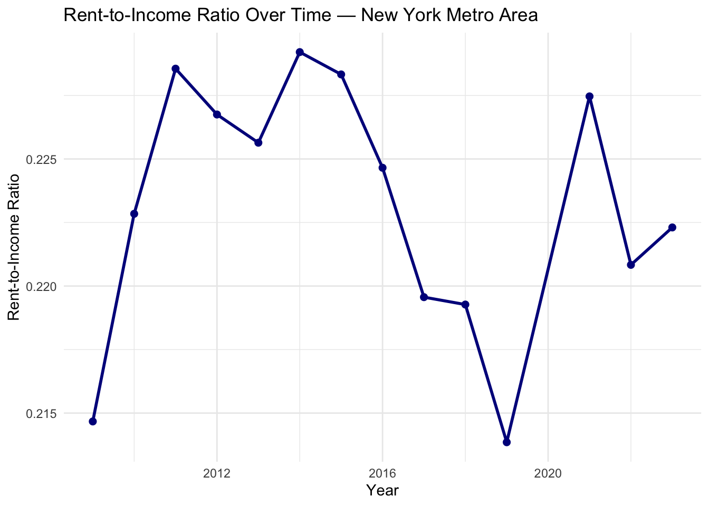
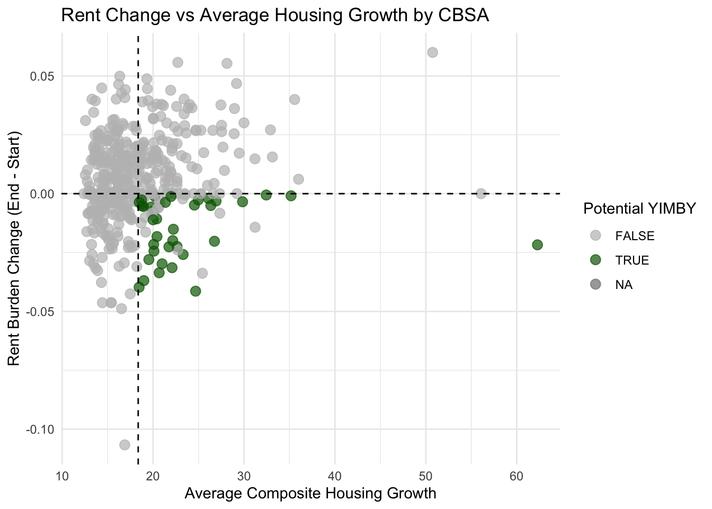
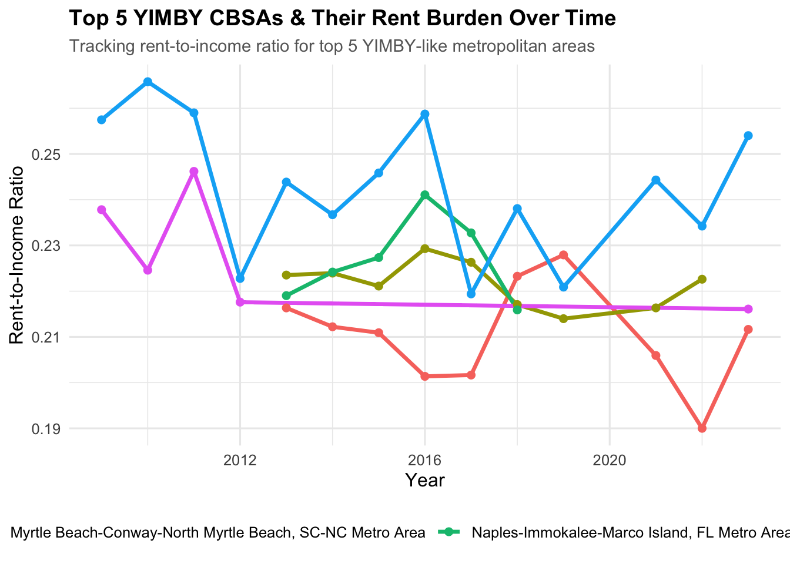

Mini Project #02: Making Backyards Affordable for All
Author
DEANNA BRUNO
‘Yes in my Backyard’ movement flourishing as pictured in San Francisco. Jim Wilson/The New York Times
Executive Summary
This project examines housing affordability and growth within metropolitan areas in the United States from years 2009 to 2023, focusing directly on identifying ‘Yes In My Backyard’ candidates cities.
Using household incomes, rent, housing permits, and population data, the following was gathered:
High-rent metropolitan areas, like New York, show persistent rent burdens. Smaller areas have managed to increase housing supplies when relative to the demand for them.
The top five ‘Yes In My Backyard’ candidates combine high initial rent, lessened rent burden, housing growth, and growing populations.
Lastly, when considering the appeal to younger generations, several ‘Yes In My Backyard’ metro areas also align with areas that are attractive to related populations.3
Acquiring Data
###Data Import As required in ‘Task 1’. The following code imports and downloads data from the U.S Census Bureau, or more specifically the American Community Survey (ACS). This has been done through the tidycensus package in R, and provides valuable household demographic and economic information that will be used throughout the completion of Mini-Project #02.
Click to show code
if(!dir.exists(file.path("data", "mp02"))){dir.create(file.path("data", "mp02"), showWarnings=FALSE, recursive=TRUE)}library <-function(pkg){## Mask base::library() to automatically install packages if needed## Masking is important here so downlit picks up packages and links## to documentation pkg <-as.character(substitute(pkg))options(repos =c(CRAN ="https://cloud.r-project.org"))if(!require(pkg, character.only=TRUE, quietly=TRUE)) install.packages(pkg)stopifnot(require(pkg, character.only=TRUE, quietly=TRUE))}library(tidyverse)
── Attaching core tidyverse packages ──────────────────────── tidyverse 2.0.0 ──
✔ dplyr 1.1.4 ✔ readr 2.1.5
✔ forcats 1.0.0 ✔ stringr 1.5.1
✔ ggplot2 3.5.2 ✔ tibble 3.3.0
✔ lubridate 1.9.4 ✔ tidyr 1.3.1
✔ purrr 1.1.0
── Conflicts ────────────────────────────────────────── tidyverse_conflicts() ──
✖ dplyr::filter() masks stats::filter()
✖ dplyr::lag() masks stats::lag()
ℹ Use the conflicted package (<http://conflicted.r-lib.org/>) to force all conflicts to become errors
Click to show code
library(glue)library(readxl)library(tidycensus)get_acs_all_years <-function(variable, geography="cbsa",start_year=2009, end_year=2023){ fname <-glue("{variable}_{geography}_{start_year}_{end_year}.csv") fname <-file.path("data", "mp02", fname)if(!file.exists(fname)){ YEARS <-seq(start_year, end_year) YEARS <- YEARS[YEARS !=2020] # Drop 2020 - No survey (covid) ALL_DATA <-map(YEARS, function(yy){ tidycensus::get_acs(geography, variable, year=yy, survey="acs1") |>mutate(year=yy) |>select(-moe, -variable) |>rename(!!variable := estimate) }) |>bind_rows()write_csv(ALL_DATA, fname) }read_csv(fname, show_col_types=FALSE)}# Household income (12 month)INCOME <-get_acs_all_years("B19013_001") |>rename(household_income = B19013_001)# Monthly rentRENT <-get_acs_all_years("B25064_001") |>rename(monthly_rent = B25064_001)# Total populationPOPULATION <-get_acs_all_years("B01003_001") |>rename(population = B01003_001)# Total number of householdsHOUSEHOLDS <-get_acs_all_years("B11001_001") |>rename(households = B11001_001)
The following code now will manually download and prepare data of new housing units built per year.
Socioeconomic demographic statistics may determine the best Core-Based Statistical Areas (CBSAs) for potential homeowners. The following code imports income estimates from professionals recorded by the Burea of Labor Statistics (BLS) using the North American Industry Classification System (NAICS).
Click to show code
library(httr2)library(rvest)
Attaching package: 'rvest'
The following object is masked from 'package:readr':
guess_encoding
To better understand how each of the different data sets correlate to one another, the following data relationship diagram has been created with the help of DBDiagram.io:
This diagram illustrates the structure of the key tables used in the project. This includes data from the American Community Survey, employment data from the Bureau of Labor Statistics, and building permit data. By visualizing these relationships, it becomes easier to see how socioeconomic, employment, and housing supply information are linked together. This was done through identifiers like GEOID, FIPS, and CBSAID.
As we attempt to scope housing affordability across different regions in the United States, the variable of income will give more insights as to what the population can afford. Household income along with its relationship with the population, monthly rent, new units permitted, and employment wages data will all aid us in understanding where housing is more or less affordable. Not only that, but it may provide insights into which metro area regions may need more attention in terms of housing development.
Integration and Exploration of Data
Multi-Table Questions
With the information provided by the aforementioned data sets, we can now answer the following as instructed by ‘Task 2’:
Question 1: Which CBSA (by name) permitted the largest number of new housing units in the decade from 2010 to 2019 (inclusive)?
The CBSA that permitted the largest number of new housing units from 2010 to 2019 is Houston-Sugar Land-Baytown, TX Metro Area, with a total of 482,075 new housing units permitted during that period.
Method & Approach:
Click to show code
library(dplyr)library(DT)permits_2010_2019 <- PERMITS %>%filter(year >=2010, year <=2019)# To gather top CBSA & format display of unitstop_cbsa <- permits_2010_2019 %>%group_by(CBSA) %>%summarize(total_units =sum(new_housing_units_permitted, na.rm=TRUE)) %>%left_join(INCOME %>%distinct(GEOID, NAME), by =c("CBSA"="GEOID")) %>%arrange(desc(total_units)) %>%slice_head(n=1) %>%ungroup() %>%mutate(total_units =format(total_units, big.mark =","))# To create formatted table for top CBSAdatatable( top_cbsa, caption ="Top CBSA by Total New Housing Units (2010-2019)",rownames =FALSE,options =list(pageLength =10, searching =FALSE, info =FALSE),colnames =c("CBSA Code", "Total Housing Units", "Metropolitan Area"))
Question 2: In what year did Albuquerque, NM (CBSA Number 10740) permit the most new housing units?
The year in which Albuquerque, NM (CBSA code 10740) permitted the most new housing units was 2021, with a total of 4,021 new units. This was most likely driven after the COVID-19 pandemic, as recovery efforts led to increased housing demand. Years after in 2022 and 2023 continued to be at the top of the list of new housing units permitted.
Method & Approach:
Click to show code
library(dplyr)# To gather top years for Albuquerque, NMalbuquerque_most <- PERMITS |>filter(CBSA ==10740) |>arrange(desc(new_housing_units_permitted)) |>slice_head(n =10) |>mutate(new_housing_units_permitted =format(new_housing_units_permitted, big.mark =","))# To create formatted tabledatatable( albuquerque_most,caption ="Albuquerque, NM Year with Most New Housing Units Permitted",rownames =FALSE,options =list(pageLength =10, searching =FALSE, info =FALSE),colnames =c("CBSA Code", "New Housing Units Permitted", "Year"))
Question 3: Which state (not CBSA) had the highest average individual income in 2015?
In the year 2015, the District of Columbia had the highest average individual income in comparison to the rest of the United States, with an average income of $33,232.88 per individual.
Method & Approach:
Click to show code
library(dplyr)library(DT)library(stringr)# Make list that matches state abbreviations to full namesstate_df <-data.frame(abb =c(state.abb, "DC", "PR"),name =c(state.name, "District of Columbia", "Puerto Rico"))# Find which state has the highest average individual income in 2015highest_income_2015 <- INCOME |>filter(year ==2015) |>left_join(HOUSEHOLDS |>filter(year ==2015), by ="GEOID") |>left_join(POPULATION |>filter(year ==2015), by ="GEOID") |>mutate(total_income = household_income * households,state =str_extract(NAME, ",\\s*([A-Z]{2})") |>str_replace_all(",\\s*", "") ) |>group_by(state) |>summarize(total_income =sum(total_income, na.rm =TRUE),total_population =sum(population, na.rm =TRUE), .groups ="drop" ) |>mutate(average_income = total_income / total_population) |>left_join(state_df, by =c("state"="abb")) |>arrange(desc(average_income)) |>slice_head(n =10) |>mutate(Average_Income =format(round(average_income, 2), big.mark =",")) |>select(State = name, Average_Income)# To create formatted table for top CBSAsdatatable( highest_income_2015,caption ="State with Highest Average Individual Income in 2015",rownames =FALSE,options =list(pageLength =10, searching =FALSE, info =FALSE),colnames =c("State", "Average Individual Income"))
Question 4: Data scientists and business analysts are recorded under NAICS code 5182. What is the last year in which the NYC CBSA had the most data scientists in the country?
Based on data scientists and business analysts recorded under NAICS code 5182, the last year in which the New York City Core-Based Statistical Areas (CBSA) had the most data scientists in the country were 32,961 employed in the year 2023. This was recorded in CBSA code C41860, or the San Francisco-Oakland-Fremont, CA Metro Area.
Question 5: What fraction of total wages in the NYC CBSA was earned by people employed in .the finance and insurance industries (NAICS code 52)? In what year did this fraction peak?
In the NYC CBSA, employees in the finance and insurance industries (NAICS code 52) peaked in earnings of a fraction of total wages in the year 2014, with a fraction of 4.60% of total wages ($119,105,615,711).
As instructed for ‘Task 3’, the following section explores important relationships across Core-Based Statistical Areas (CBSAs) using ggplot2. Utilizing these visualizations, we can better understand housing affordability across different regions in the United States, catching key trends.
We will specifically examine the following:
1. Monthly Rent vs. Average Household Income per CBSA in the year 2009.
2. Total Employment vs. Total Employment in the Health Care & Social Services sector.
3. Evolution of Average Household Size.
Monthly Rent vs. Average Household Income per CBSA in the year 2009:
This scatter plot compares average household income across CBSAs in 2009. This shows a visualization of the relationship between income and rent, where we can identify regions that may have higher or lower housing costs.
Click to show code
library(dplyr)library(ggplot2)library(scales)
Attaching package: 'scales'
The following object is masked from 'package:purrr':
discard
The following object is masked from 'package:readr':
col_factor
Click to show code
# Preparation of the 2009 year datasethousing_of_2009 <- INCOME %>%filter(year ==2009) %>%inner_join(RENT %>%filter(year ==2009), by ="GEOID") %>%select(NAME.x, household_income, monthly_rent)# Creation of the scatter plot points & regression lineggplot(housing_of_2009, aes(x = household_income, y = monthly_rent)) +geom_point(shape =21, fill ="#c7e2fe", color ="darkblue", alpha =0.7, size =3) +stat_smooth(method ="lm", se =FALSE, color ="darkblue", linewidth =1.0) +labs(title ="Monthly Rent vs. Household Income per CBSA (2009)",x ="Average Household Income (USD $)",y ="Monthly Rent (USD $)" ) +scale_x_continuous(labels =dollar_format())+scale_y_continuous(labels =dollar_format())+theme(plot.title =element_text(face ="bold") )
`geom_smooth()` using formula = 'y ~ x'

Total Employment vs. Total Employment in the Health Care & Social Services Sector:
This plot chart creates a visualization of total employment versus employment in the health care and social services sector (NAICS 62) across CBSAs.
Click to show code
library(dplyr)library(ggplot2)library(scales)# Prepares healthcare employment datahealthcare_employment_wages <- WAGES %>%mutate(FIPS =as.character(FIPS)) %>%group_by(FIPS, YEAR, INDUSTRY) %>%summarise(EMPLOYMENT =sum(EMPLOYMENT, na.rm =TRUE), .groups ="drop") %>%group_by(FIPS, YEAR) %>%summarise(total_employment =sum(EMPLOYMENT, na.rm =TRUE),healthcare_employment =sum(EMPLOYMENT[INDUSTRY ==62], na.rm =TRUE),.groups ="drop" )healthcare_employment_wages <- healthcare_employment_wages %>%left_join( INCOME %>%mutate(GEOID =as.character(GEOID)) %>%select(GEOID, NAME) %>%distinct(),by =c("FIPS"="GEOID") )# Creates scatter plot by yearggplot(healthcare_employment_wages,aes(x = total_employment, y = healthcare_employment, fill = YEAR)) +geom_point(shape =21, color ="darkblue", alpha =0.7, size =3) +scale_fill_viridis_c(option ="mako") +labs(title ="Health Care Employment vs. Total Employment Across CBSAs",x ="Total Employment",y ="Employment in Health Care & Social Services",fill ="Year" ) +scale_x_continuous(labels = comma) +scale_y_continuous(labels = comma) +theme_minimal(base_size =14) +theme(plot.title =element_text(face ="bold", size =16, hjust =0.5),axis.title =element_text(size =14) )

Evolution of Average Household Size:
This is a line plot that visualizes the evolution of the average household size across CBSAs over time, showcasing cities like New York and Los Angeles.
Click to show code
library(dplyr)library(ggplot2)# Preparation of datahousehold_size_data <- POPULATION %>%inner_join(HOUSEHOLDS %>%select(GEOID, year, households), by =c("GEOID", "year")) %>%mutate(avg_household_size = population / households,year =as.numeric(year))household_size_data <- household_size_data %>%mutate(highlight_cbsa =case_when(grepl("New York", NAME, ignore.case =TRUE) ~"New York",grepl("Los Angeles", NAME, ignore.case =TRUE) ~"Los Angeles",TRUE~"Other" ))# Split into background and highlighted linesbackground <- household_size_data %>%filter(highlight_cbsa =="Other")highlighted <- household_size_data %>%filter(highlight_cbsa !="Other")ggplot() +geom_line(data = background, aes(x = year, y = avg_household_size, group = NAME),color ="grey80", linewidth =0.7) +# background linesgeom_line(data = highlighted, aes(x = year, y = avg_household_size, color = highlight_cbsa),linewidth =1.5) +# highlighted linesscale_color_manual(values =c("New York"="blue", "Los Angeles"="darkblue")) +labs(title ="Average Household Size Over Time Across CBSAs",subtitle ="Highlighted: New York and Los Angeles",x ="Year",y ="Average Household Size",color ="" ) +theme_minimal(base_size =14) +theme(legend.position ="bottom",plot.title =element_text(face ="bold"),plot.subtitle =element_text(face ="italic") )

Building Indices of Housing Affordability and Housing Stock Growth
The follow section is a thoroughly conducted analysis on trends within housing affordability.
Rent Burden
The rent burden trends for the New York Metro area between the years 2009 and 2023:
Click to show code
library(dplyr)library(DT)library(ggplot2)rent_burden <- INCOME %>%inner_join(RENT, by =c("GEOID", "NAME", "year")) %>%mutate(rent_to_income = (monthly_rent *12) / household_income ) %>%mutate(baseline_2009 =mean(rent_to_income[year ==2009], na.rm =TRUE),baseline_mean =mean(rent_to_income, na.rm =TRUE),rent_burden_sd =sd(rent_to_income, na.rm =TRUE), ) %>%ungroup() %>%select(GEOID, NAME, year, household_income, monthly_rent, rent_to_income)nyc_rent <- rent_burden %>%filter(str_detect(NAME, "New York")) %>%arrange(year)DT::datatable( nyc_rent %>%mutate(NAME ="New York Metro",rent_to_income = scales::percent(rent_to_income, accuracy =0.1) ) %>%select(NAME, year, household_income, monthly_rent, rent_to_income),caption ="Rent Burden Over Time for New York Metro (2009–2023)",colnames =c("Metro Area"="NAME","Year"="year","Median Household Income"="household_income","Median Rent"="monthly_rent","Rent-to-Income Ratio"="rent_to_income" ),options =list(pageLength =15, dom ='t', ordering =TRUE),rownames =FALSE)
This represents the top and bottom 10 metro areas (CBSAs) ranked by their Rent Burden Index, or the ratio of rent to income to the baseline year of 2009. The metros with the highest rent burden generally represents areas where the supply of housing hasn’t kept up with the demand.
Click to show code
library(dplyr)library(DT)library(glue)rent_burden <- INCOME %>%inner_join(RENT, by =c("GEOID", "NAME", "year")) %>%mutate(rent_to_income = (monthly_rent *12) / household_income,baseline_2009 =mean(rent_to_income[year ==2009], na.rm =TRUE),rent_burden_index = (rent_to_income / baseline_2009) *100 ) %>%ungroup() %>%select(GEOID, NAME, year, household_income, monthly_rent, rent_to_income, rent_burden_index)latest_year <-max(rent_burden$year, na.rm =TRUE)# Filters data and ranks itrent_rank <- rent_burden %>%filter(year == latest_year) %>%arrange(desc(rent_burden_index)) %>%select(NAME, latest_rent_burden = rent_burden_index, rent_to_income)# Cleans the formatrent_rank_clean <- rent_rank %>%mutate(NAME =enc2utf8(NAME),latest_rent_burden =round(latest_rent_burden, 2),rent_to_income =round(rent_to_income, 4) )# Combines top and bottom 10 into one tablerent_rank_tbl <-bind_rows(head(rent_rank_clean, 10) %>%mutate(Category ="Highest Burden"),tail(rent_rank_clean, 10) %>%mutate(Category ="Lowest Burden"))# Creates a visualization in the form of a data tableDT::datatable( rent_rank_tbl,caption =glue("Top and Bottom 10 Metropolitan Areas by Rent Burden Index ({latest_year})"),colnames =c("Metropolitan Area"="NAME","Rent Burden Index"="latest_rent_burden","Rent-to-Income Ratio"="rent_to_income","Category"="Category" ),options =list(pageLength =20, dom ='t', ordering =TRUE),rownames =FALSE)
The following line plot visualizes the Rent Burden Index over time for the New York Metro Area, or the area that I have chosen to continue looking into. It shows how the city’s housing affordability has changed over the years.
Click to show code
ggplot(nyc_rent, aes(x = year, y = rent_to_income)) +geom_line(color ="darkblue", linewidth =1) +geom_point(color ="darkblue", size =2) +labs(title ="Rent-to-Income Ratio Over Time — New York Metro Area",x ="Year",y ="Rent-to-Income Ratio" ) +theme_minimal()

Housing Growth
This table ranks CBSAs by instantaneous, rate-based, and composite housing growth data. Each one helps to identify areas where the housing supply is growing rapidly compared to population changes.
Click to show code
library(dplyr)library(DT)library(glue)housing_data <- POPULATION %>%inner_join(PERMITS, by =c("GEOID"="CBSA", "year")) %>%arrange(GEOID, year)# Compute 5 year population growthhousing_data <- housing_data %>%group_by(GEOID) %>%mutate(pop_lag5 =lag(population, 5),pop_growth_5yr = population - pop_lag5 ) %>%ungroup()housing_data <- housing_data %>%mutate(instant_growth = new_housing_units_permitted / population,rate_growth = new_housing_units_permitted / pop_growth_5yr ) %>%mutate(instant_scaled =100* (instant_growth -min(instant_growth, na.rm=TRUE)) / (max(instant_growth, na.rm=TRUE) -min(instant_growth, na.rm=TRUE)),rate_scaled =100* (rate_growth -min(rate_growth, na.rm=TRUE)) / (max(rate_growth, na.rm=TRUE) -min(rate_growth, na.rm=TRUE)),composite_growth = (instant_scaled + rate_scaled) /2 )# Identify the latest yearlatest_year <-max(housing_data$year, na.rm=TRUE)# Creating a visualization in the form of a tablemake_top_bottom_table <-function(data, metric, n =10) { top <- data %>%filter(year == latest_year) %>%arrange(desc(.data[[metric]])) %>%slice_head(n = n) %>%mutate(Category ="Highest") bottom <- data %>%filter(year == latest_year) %>%arrange(.data[[metric]]) %>%slice_head(n = n) %>%mutate(Category ="Lowest")bind_rows(top, bottom) %>%select(NAME, !!metric :=all_of(metric), Category)}# Instantaneous Growth Tableinstant_tbl <-make_top_bottom_table(housing_data, "instant_scaled")# Rate-Based Growth Tablerate_tbl <-make_top_bottom_table(housing_data, "rate_scaled")# Composite Growth Tablecomposite_tbl <-make_top_bottom_table(housing_data, "composite_growth")# Display of each of the aforementioned tablesDT::datatable( instant_tbl,caption = glue::glue("Top and Bottom CBSAs by Instantaneous Housing Growth ({latest_year})"),options =list(pageLength =20),rownames =FALSE)
Click to show code
DT::datatable( rate_tbl,caption = glue::glue("Top and Bottom CBSAs by Rate-Based Housing Growth ({latest_year})"),options =list(pageLength =20),rownames =FALSE)
Click to show code
DT::datatable( composite_tbl,caption = glue::glue("Top and Bottom CBSAs by Composite Housing Growth ({latest_year})"),options =list(pageLength =20),rownames =FALSE)
Instantaneous Housing Growth Table: Measuring how active a region is in permitting new houses, this table measures how many new housing units are being built when compared to the total population measure.
Rate- Based Housing Growth Table: Showing whether or not housing construction can keep up with population increases, this table compares the number of new housing units being built to the growth of the population over the course of the last five years.
Composite Housing Growth Table: Giving an overall view of housing growth in a metro area, this table combines both instantaneous and rate-based growth tables to give a bigger picture view of housing growth.
Visualization
Data Preparation:
The following code will prepare the data set in order to create two visualizations:
The following scatter plot shows the relationship between average housing growth and rent burden change across CBSAs. Each data set point is colored green based on whether it meets the criteria of being a potential YIMBY candidate.
Click to show code
library(ggplot2)ggplot(cbsa_summary, aes(x = avg_housing_growth, y = rent_change, color = yimby_candidate)) +geom_point(size =3, alpha =0.7) +geom_hline(yintercept =0, linetype ="dashed") +geom_vline(xintercept =mean(cbsa_summary$avg_housing_growth, na.rm=TRUE), linetype ="dashed") +labs(title ="Rent Change vs Average Housing Growth by CBSA",x ="Average Composite Housing Growth",y ="Rent Burden Change (End - Start)",color ="Potential YIMBY" ) +scale_color_manual(values =c("FALSE"="grey", "TRUE"="darkgreen")) +theme_minimal()
Warning: Removed 70 rows containing missing values or values outside the scale range
(`geom_point()`).

Visualization #2:
The following visualization focuses on the top 5 CBSAs that are considered the closest to a YIMBY-like model. It tracks their rent-to-income ratio over time.
Click to show code
library(dplyr)library(ggplot2)# Pick top 5 YIMBY CBSAs by average housing growthtop_yimby_cbsas <- cbsa_summary %>%filter(yimby_candidate) %>%arrange(desc(avg_housing_growth)) %>%slice_head(n =5) %>%pull(NAME)# Filter rent burden data for just these CBSAsyimby_rent_trends <- rent_burden %>%filter(NAME %in% top_yimby_cbsas)# Plotted line chartggplot(yimby_rent_trends, aes(x = year, y = rent_to_income, color = NAME)) +geom_line(linewidth =1.2) +geom_point(size =2) +labs(title ="Top 5 YIMBY CBSAs & Their Rent Burden Over Time",subtitle ="Tracking rent-to-income ratio for top 5 YIMBY-like metropolitan areas",x ="Year",y ="Rent-to-Income Ratio",color ="CBSA" ) +theme_minimal(base_size =12) +theme(legend.position ="bottom",plot.title =element_text(face ="bold", size =14),plot.subtitle =element_text(size =11, color ="gray40") )

Policy Brief
This final section dives into a policy brief covering the key points gathered from above:
Helping Metropolitan Areas Grow Housing and Improve Affordability for Younger Generations
Written By Deanna Bruno
NEW YORK, NY - October 2025
Based on a comprehensive analysis performed on housing affordability and growth trends across a variety of metropolitan areas throughout the United States, there are several distinct insights that have been highlighted and can provide information regarding housing policy decisions.
What was found:
1. Rent Burden Trends: Certain regions, like the New York Metro Area, have seen increases in rent-to-income ratios over the course of the past decade. Cities like New York have much higher rent costs in comparison to household incomes, making it extremely difficult for potential residents to afford any sort of housing.
2. Housing Growth: Housing growth was measured through instantaneous, rate-based, and composite growth. It visualized how many new homes were built in metro areas compared to the population, how many new homes compare to population growth over a five year period, and combined them both for a bigger picture. Some metro areas were able to keep up with population growth, but these allowed new housing units to be built, and more affordability.
3. Yes-in-My-Backyard (YIMBY) Candidates: Where housing is being permitted to be built in increasing levels in comparison to the general population, rent costs are becoming stable, and ultimately becoming more affordable.
4. Appeal to the Younger Generation: Cities with young adults (ages 20-34) are especially important to take into consideration. As the younger generation begins to drive the workforce and can begin to support small-local businesses, they will want to stay in a metro area of affordable housing.
Policy Recommendations:
1. Encourage Development of Houses: Metropolitan areas should consider policies that encourage the development of new housing units, especially in areas that are high demand to live in. This can include zoning reforms.
2. Offer tax incentives or a type of funding to affordable housing projects.
3. Start community programs of YIMBY advocacy.
What is expected?:
Rent should become more affordable, metro areas alike will attract younger generations that will in turn drive local business growth and a better economy.